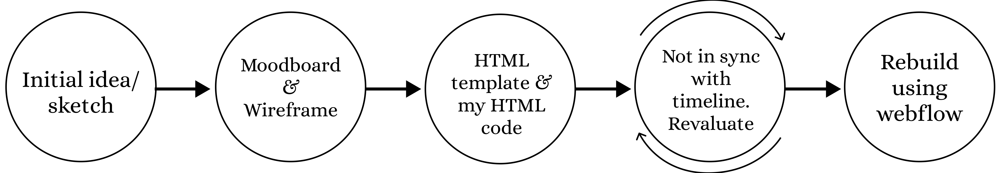

Personal Site Process
Role
Designer, Creator
Timeline
April 2022 - August 2022
Technologies
Figma, CSS, HTML, WebFlow, Github
Project Overview
As a first-generation student collecting experiences in personal, academic, and professional environments, I have found it difficult to effectively showcase what I've accomplished, taken an interest in, and learned during my journey. This site aims to be a host for all-things "Ariana Kha." From my crafts to my summer internship. I intend to leverage this platform to dive deep into my projects and processes to provide some perspective on what exactly makes me, me.
This page will prove perspective on my thought process while developing this personal site. It walks through the iterative process and constant readjustments made.

Initial Project
Feedback Process
Utilized LinkedIn and ADPlist connect with UX/UI designers. Hosted calls with 10 designers and collected feedback. Determined the most common pieces of feedback and made refinements accordingly.
Feedback Results
- Projects open internally, rather than externally
- Move bio to a different page
- Place projects in the front page
- Embed elements rather than linking it to a different page
What I learned
Throughout this project I learned to strike a balance between aesthetics and practicality. My initial project had a large emphasis on appearance. Meeting with designers provided prospective on the importance of having results take priority. I also learned how to optimize engagement within the confinements of human nature (hamburger method).
What I'd do differently
If I were to redo this project, I would start by researching people I can garner feedback from in the beginning of the project rather than the end. Then I would conduct user-testing at every stage of the project to create a more comprehensive design.
Thank you for your time, happy browsing!